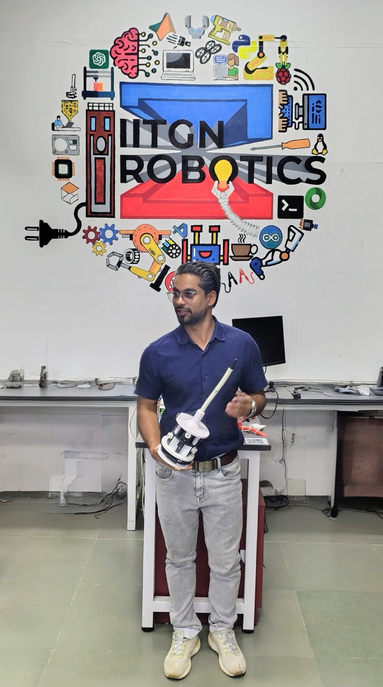

About

Roboticist
Driven by a passion for enhancing human-robot collaboration and a deep-rooted commitment to healthcare innovation, I have dedicated my career to pushing the boundaries of technology and engineering. My journey began at Gujarat Technological University, where my academic excellence in Biomedical Engineering laid the foundation for my aspirations. I further honed my expertise at the Indian Institute of Technology Gandhinagar, pursuing a Ph.D. in Mechanical Engineering with a specialization in robotic manipulators inspired by human learning mechanisms.
My academic pursuits have been complemented by a series of enriching professional experiences across the globe, including research scholarships at prestigious institutions such as the Technical University of Vienna and The University of Texas at Austin. These opportunities have enabled me to contribute to projects at the forefront of human-robot interaction and medical device innovation.
Beyond my technical contributions, I have shared my knowledge and enthusiasm for robotics and control theory as a Graduate Teaching Fellow, shaping the minds of future engineers. My research, documented in numerous publications and recognized with awards like the Regional Finale of Boeing BUILD, underscores my commitment to advancing our understanding and application of robotics. When not immersed in research or teaching, I find solace in tinkering with electronics, exploring the harmonies of musical instruments, and embracing the tranquility of nature.
- Email: firdaus_md@iitgn.ac.in
- Website: www.mdmodassirfirdaus.github.io
- Office: AB 4/301, IIT Gandhinagar, India
- City: Ahmedabad, India